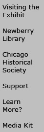

|

|
|
Public Programs: November
October | December | January
Gallery Walk
Saturday, November 6, 12:00 pm
Admission is free. No reservations are required.
Bus Tour: Chicago�s Free Speech Tradition
Saturday, November 13, 1:00 pm � 5:00 pm
Meet in the lobby of the Newberry Library at 1:00 pm
Tour leaders: William Adelman, Illinois Labor History Society, and actress Alma Washington
Accompanied by actress Alma Washington as Lucy Parsons, labor historian William Adelman takes
us through the city of Chicago to some of its significant sites in the battle for free speech. Highlights of this tour include Bughouse Square, the new Haymarket Square memorial, the former site of the Dill Pickle Club, and Forest Park cemetery. The tour will begin at the Newberry Library with a tour of the joint Newberry and Chicago Historical Society exhibition, Outspoken: Chicago�s Free Speech Tradition.
$35 ($25 for Chicago Historical Society members and Newberry Library Associates). Call the Chicago Historical Society at (312) 642-4600 to register for the bus tour.
Film: The Weather Underground
Tuesday, November 16, 6:30 - 9:30 pm
Note location: Chicago Historical Society, 1601 N. Clark
Post-screening discussion with director Bill Siegal, William Ayers, University of Illinois at
Chicago, and Bernardine Dohrn, Northwestern University.
The Academy Award-nominated documentary The Weather Underground follows the story of a group
of idealistic young Chicago anti-war activists as they crossed the line from peaceful public protest to become clandestine revolutionary outlaws.The Chicago Historical Society and Newberry Library host this event with the film�s director and two former members of the Weathermen.
The program is free with admission to the Chicago Historical Society: $5 ($3 seniors and students; $1 children 12 and under). Chicago Historical Society members and Newberry Library Associates will be admitted free to the Historical Society and the program.
Reservations are recommended; for reservations call (312) 642-4600.
|
|